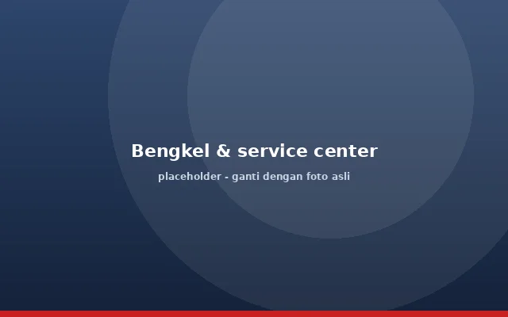
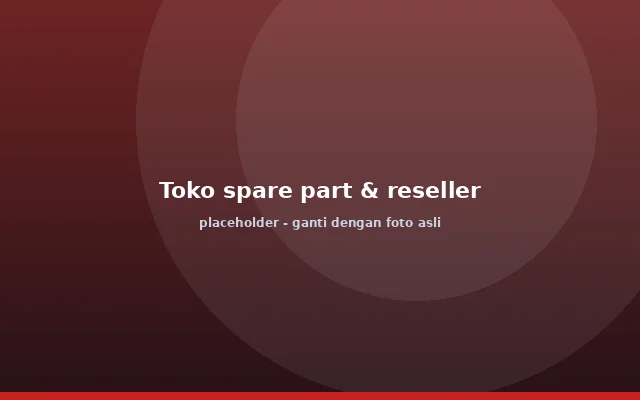
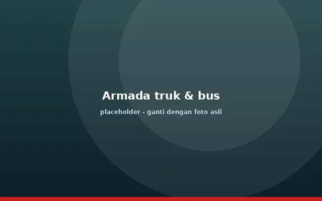
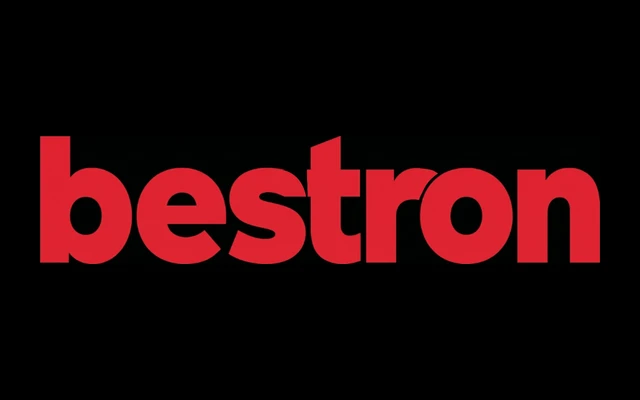
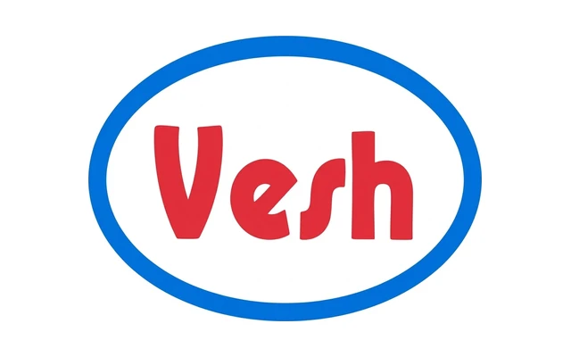
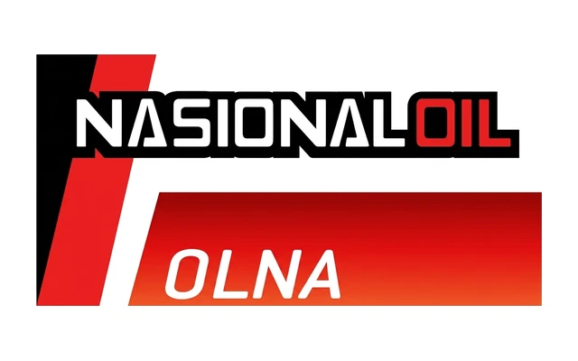
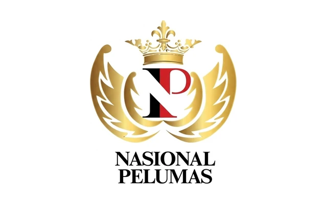
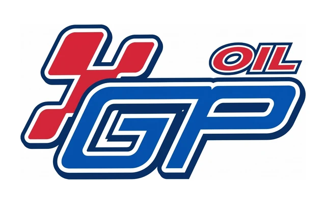

Kami memproduksi pelumas industri di Tangerang, dan kini kami pasok oli ATF dalam lima merek untuk bengkel, toko spare part, dan pemilik armada. Harga produsen, kualitas terjaga dari satu pabrik, kirim ke seluruh Indonesia.
Tanpa rantai perantara. Margin Anda lebih tebal, atau harga ke pelanggan Anda tetap bersaing.
Dari eceran di etalase sampai kuras massal di bengkel dan armada. Satu pemasok untuk semua ukuran.
Pesanan dikemas rapi dan dikirim terjadwal, sehingga rak dan gudang Anda tidak kosong.
Bingung merek atau ukuran mana yang paling untung? Tim marketing kami bantu hitung.

Stok oli ATF siap saat mobil pelanggan sudah di lift. Tidak perlu lagi belanja eceran yang menyita waktu.

Produk perputaran cepat dengan lima merek untuk segmen harga yang berbeda dan margin yang jelas.

Kuras transmisi truk dan bus dalam jumlah besar dengan harga drum, sehingga biaya perawatan per unit turun.
Semua diproduksi PT Cisadane Jaya Perkasa di Tangerang. Pilih merek yang pas untuk bengkel, toko, atau armada Anda, lalu tanyakan ketersediaan tiap ukuran kemasan kepada tim kami.

Oli ATF dari PT Cisadane Jaya Perkasa untuk transmisi otomatis dan power steering. Cocok untuk bengkel yang butuh stok rutin.

Pilihan oli ATF untuk toko spare part dan reseller yang ingin produk perputaran cepat dengan harga langsung dari pabrik.

Oli ATF kemasan 1 L sampai drum 200 L, praktis untuk pembelian eceran maupun kebutuhan armada dalam jumlah besar.

Bagian dari lini pelumas National kami. Tanyakan ukuran kemasan yang tersedia dan harga grosirnya kepada tim marketing.

Oli ATF untuk pelanggan yang mencari pasokan tetap dari produsen. Bisa dipesan satuan maupun kontrak rutin.
[Ganti angka di atas dengan data perusahaan yang sebenarnya, misalnya jumlah pelanggan atau tahun berdiri.]
Kirim merek, ukuran, dan jumlah yang Anda perlukan. Kami balas dengan harga dan estimasi kirim.
Minta penawaran sekarang